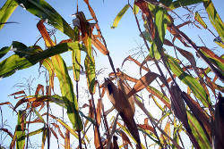

Economia Colonial
A economia da época era comandada por Portugal, que mantinha a exclusividade nos negócios com a colônia. O avanço econômico do Brasil estava ligado ao aumento do capitalismo mercantil. No período colonial, foram desenvolvidas atividades de subsistência e de exportação. Portugal tinha um interesse maior nos negócios que eram estabelecidos com o mercado externo.
O pau-brasil foi a primeira atividade econômica exercida no país, mas com o uso excessivo, a árvore se tornou rara. Posteriormente, foram introduzidas as culturas de algodão, tabaco, cana-de-açúcar e a mineração. Já a criação de gado ajudou o povoamento no interior do país. A economia colonial existia no intuito de satisfazer a metrópole e tinha que comprar de Portugal tudo o que era necessário para seu desenvolvimento.
Pau-Brasil
O Pau-Brasil é uma árvore nativa da Mata Atlântica e recebe esse nome por causa do Brasil. É uma árvore dura e pontiaguda que tem no miolo a cor vermelha e flores amarelas. A exploração da árvore já era feita pelos índios e foi intensificada com a chegada dos primeiros colonos ao país. Foi nesse período que começaram os chamados escambos, que consistiam na troca do trabalho indígena por materiais com pouco valor como pentes, espelhos e roupas.
A exploração do pau-brasil foi o principal meio econômico da colônia durante os primeiros anos e durou até o século XIV. Devido à intensa retirada das árvores, ela foi quase extinta.
Ciclo da Cana-de-Açúcar
A sociedade que explorava o açúcar durante o período colonial eram divididos entre os donos de terra e de escravos ou pessoas que plantavam cana de forma independente. Os poderes da sociedade que dependia do açúcar estavam nas mãos do senhor de engenho. Ele oferecia proteção e auxílio em troca dos serviços das pessoas. O açúcar foi escolhido para ser o principal produto produzido no Brasil, porque os portugueses já conheciam o processo de plantio da cana e da produção do açúcar e esse era um produto muito aceito pelos europeus. Com a intensa procura pelo produto, os holandeses também investiram no país e instalaram engenhos.
Produção de Cana-de-Açúcar
A forma de plantio da cana era baseada no plantation e na monocultura escravista. O engenho era composto por: canaviais, a fábrica de açúcar que continha uma moenda, plantações de subsistência, casa da caldeira, casa do pulgar, casa-grande, senzala, capela, escola e residência dos trabalhadores que não eram escravos.
A cana-de-açúcar era prensada na moenda para obter a garapa e nas caldeiras, era feita a purificação desse caldo. Depois desse processo, o caldo era colocado em formas especiais e era observado até chegar ao ponto ideal. Com o açúcar pronto, ele era enviado para a metrópole e depois para a Holanda para que fosse refinado. A Holanda não só participava do refino como também era a peça principal na montagem do engenho e no transporte do açúcar.
Os trabalhadores utilizados eram os índios e os escravos africanos. Várias áreas de vegetação foram destruídas para que fossem plantados os canaviais e para que o engenho fosse construído. O produto de subsistência que era mais produzido em paralelo à cana, era a mandioca, pois ela era matéria-prima da farinha, um item essencial para a alimentação dos brasileiros na época. Além disso, o algodão e o fumo eram bastante importados do Brasil.
Muitos fazendeiros não possuíam engenhos e tinham que moer a cana no engenho de outra pessoa, mediante o pagamento de um valor. Esses fazendeiros recebiam o nome de senhores obrigados.
Ciclo do Ouro
O Ciclo do Ouro começou no fim do século XVII, quando o açúcar já não era tão importante devido o seu investimento que estava sendo feito na América Central. Sendo assim, era necessário buscar uma outra forma de economia e descobriram as primeiras minas de ouro em solo brasileiro, nas regiões onde ficam Minas Gerais e Goiás.
A exploração do ouro era tão importante que o governo português decidiu mudar a capital de Salvador para o Rio de Janeiro, pois estava mais próximo das minas de ouro. Foram criadas as Casas de Fundição, que cobravam altos impostos de quem extraía o minério. Os principais impostos eram: o quinto (20% da produção do ouro deveriam ir para o rei de Portugal); a Derrama (a colônia tinha que arrecadar 1.500kg de ouro por ano); e a Capitação (era cobrado imposto sobre cada escravo que trabalhava nas minas). A exploração, e os diversos impostos e taxas cobradas foram motivos para muitas revoltas que ocorreram nessa época. O Ciclo do Ouro permaneceu até o ano de 1785.
Consequências
- mudanças sociais e políticas;
- ajudou no comércio interno;
- ajuda nas importações de manufaturados;
- crescimento populacional.